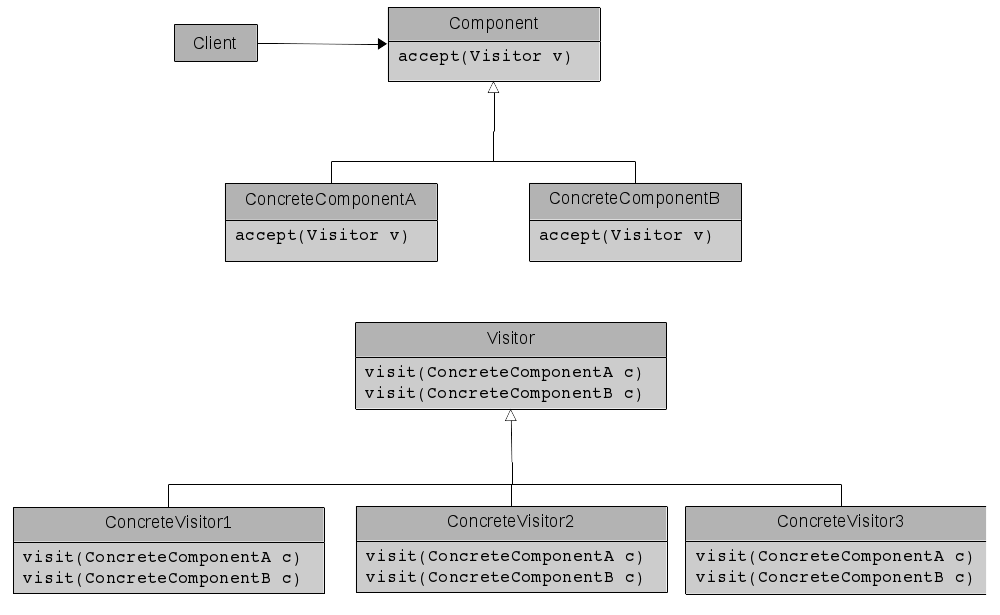

Table of Contents
1 VISITOR
1.1 Intent
- Defines new operations for a class hierarchy without modifying the hierarchy.
1.2 Structure

- In the diagram, the accept(Visitor v) method just simply calls v.visit(this), which will implement the necessary operation on the given Component. This is the double dispatch technique, in which the result of the call depends on the request and the types of two receivers.
- New operations for the Component class hierarchy can be created by adding new Visitors, which means that we don't need to modify the Component class hierarchy to define its new operations.
1.3 Example
- See /src for the source code
1.4 Risk
- The pattern is quite complicated to understand, which means that applying this pattern might make other team members find it hard to understand the code, especially when they see the code for the first time.
- If this pattern is used with the Composite pattern and the Composite contains a cycle in it, then the accept-visit loop might be repeated forever.